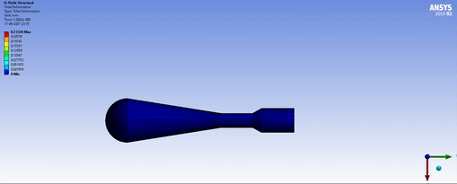

I am the Ex-DriveTrain Lead of DJSRacing , and a Mechanical Engineer. I am quite keen about E-Sports and E-vehicles alike. My BE Project was to build a ThermoAcoustic Refrigerator and the Deformation Simulation is shown above. The Simulation was done on ANSYS 19. I learned C, C++, HTML, Python by myself as I am especially interested in software design and automation. All my projects posted on GitHub and this website have been made by me using code only. I aim to learn about Machine Learning and work in a growth friendly enviornment. I aspire to build a future that is fully automized thus improving the quality of life overall. While all these goals seem too much to achieve in a single lifetime , I strongly believe that , aiming for the Moon guarantees the probability of atleast landing on a star.

